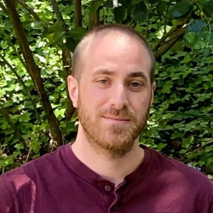

Gal Arnon
Postdoctoral Researcher · Bocconi University
gal.arnon [at] unibocconi.it
About Me
I am a postdoctoral researcher at Bocconi University.
My work lies at the intersection of cryptography and computational complexity, focusing on the power and limitations of efficient proof systems as well as their applications.
Prior to Bocconi, I was a research fellow at the Simons Institute at UC Berkeley. I received my Ph.D. from the Weizmann Institute, where I was very fortunate to be advised by Moni Naor and Eylon Yogev.
Publications
Awards
-
Esther Hellinger Memorial Prize for academic excellence
Awarded in 2024 by the Weizmann Institute.
-
Best Paper Award — CRYPTO 2024
For "STIR: Reed-Solomon Proximity Testing with Fewer Queries."
Service
- Proximity Prize: Committee member for the Proximity Prize initiative of the Ethereum Foundation.
- Workshop Organization: Lattices Meet Hashes — Recent Advances in Post-Quantum Zero-Knowledge Proofs, EPFL, May 2023.
- Program Committees: TCC 2026.
- Journal/Conference Reviews: CCC (2024) · CRYPTO (2019, 2022, 2023, 2024, 2025, 2026) · EUROCRYPT (2023, 2026) · FOCS (2025) · ITC (2025) · ITCS (2022, 2026) · SICOMP (2026) · SODA (2024) · STOC (2025) · TCC (2021, 2023, 2025).
Teaching
- Teaching Assistant: Foundations and Frontiers of Probabilistic Proofs — MSRI (SLMath) Summer School, ETH Zurich, July 2023.
- Teaching Assistant: Foundations and Frontiers of Probabilistic Proofs — MSRI (SLMath) Summer School, Virtual, July-August 2021.
- Instructor: Mini-course on zero-knowledge proofs — Amos de-Shalit Summer School, Weizmann Institute, September 2018.